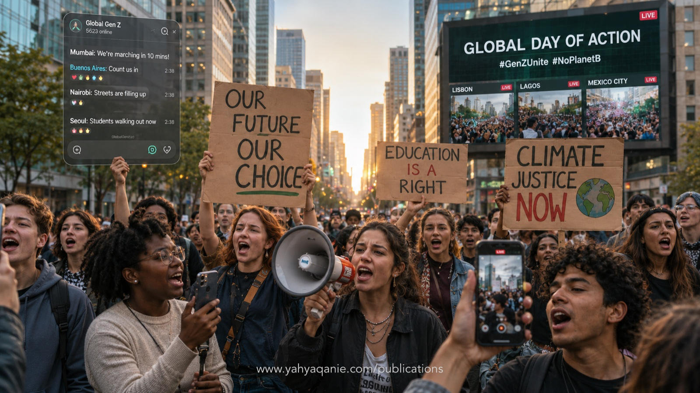

Building the Alternative
Between 2022 and early 2026, the world witnessed roughly 650 major protests, with Gen Z movements at the forefront — toppling five heads of state and reshaping public discourse from Nepal to Senegal, Sri Lanka to Serbia. Yet behind the visibility lies a paradox: movements optimized for mobilization rarely translate into lasting policy change. This multipronged study by Search for Common Ground unpacks that paradox. Drawing on a curated scan of 400+ sources, 32 in-depth interviews across 10 countries, deliberative conversations with 54 young people from 22 countries, and analysis of over half a million global protest datapoints, the report maps the architecture, drivers, risks, and impact of contemporary youth-led movements. The findings reveal a generation that is leaderful rather than leaderless, digitally native, intentionally non-partisan, and motivated less by ideology than by demands for dignity, accountability, and a livable future. The report also exposes the structural barriers — physical, digital, legal, and psychological — that constrain their influence. Anchored in the Youth, Peace & Security (YPS) agenda, the study offers a governance architecture for translating youth mobilization into sustained policy influence, with concrete recommendations for movements, governments, and the international community.